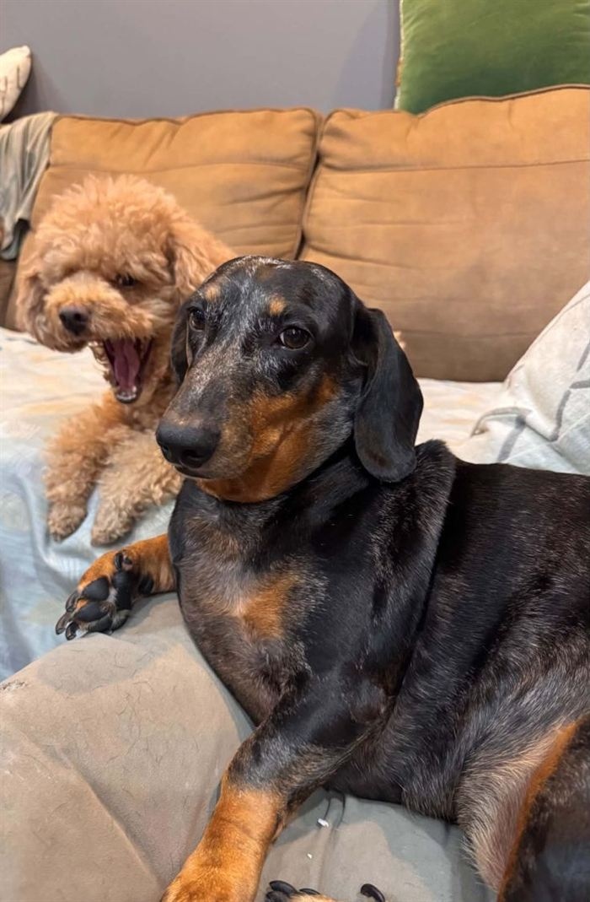

About me
Hello! I'm Mark Silkstone, and I write this study guide for my IB Diploma Programme Physics students.
I have been teaching for over 15 years at international schools in Ho Chi Minh City, Vietnam. Since 2015 I have taught DP Physics, and for many years DP Mathematics too, as well as MYP Science.
I studied physics with astrophysics at the University of Leicester in the UK. I then trained as a teacher with a Postgraduate Certificate in Education (International) from the University of Nottingham.
How I teach
I want students to understand why the physics works, not just how to use the equations. In lessons we ask questions, investigate, and test ideas with experiments. I also use concept questions to check that the ideas behind each topic really make sense. Theory of Knowledge is built into every topic, because asking "how do we know?" is part of doing physics. You'll see this in the "Knowledge and science" box at the start of every topic page.
I also enjoy the practical side of physics. I have helped to set up science laboratories, designed our school's Collaborative Sciences Project, and supervised Extended Essays.
Outside the classroom
Over the years I have run science fairs (one student team's maglev train won an inter-school gold award), a mathematics team, a robotics club and a very popular card-games club.
Away from school
I love reading science fiction. My favourite authors are Iain M. Banks, James S. A. Corey, Alastair Reynolds and Terry Pratchett. Good science fiction asks "what if?" about physics, and then takes the answer seriously.
I also enjoy spending time with my two dogs: walking them, and playing with them at home.

About this website
This guide follows the IB Physics syllabus for first assessment in 2025. The notes, worked examples, diagrams and practice questions were written specially for this site, apart from the photographs credited below. They are not copied from textbooks or past papers. The site is not produced or endorsed by the International Baccalaureate Organization.
The guiding questions and linking questions at the start of, and throughout, each topic page are quoted from the IB Diploma Programme Physics guide (first assessment 2025), © International Baccalaureate Organization. Questions labelled “Extra linking question” are our own.
If you spot a mistake, please tell me in class or use the contact form.
Copyright and permission
The notes, worked examples, diagrams, questions, mark schemes and the design of this site are copyright © 2026 Mark Silkstone. All rights reserved.
You are welcome to use the site to study. But please ask me first before copying, reproducing, sharing or adapting any of it anywhere else: for example in another website, worksheet, slide deck, book, video or AI tool. Linking to a page is fine.
Teachers: revision sheets and teacher notes made with the revision sheet builder may be copied for classroom use, but not sold.
Some content belongs to others and is used with credit: the guiding and linking questions (© International Baccalaureate Organization) and the photographs listed under Image credits and the embedded PhET simulations (University of Colorado Boulder, CC BY 4.0), which keep their own licences. My lesson slides include material from other sources and are for my students only.
Contact me
To ask permission to use something from this site, to report a mistake, or for anything else, send me a message here. Students: you can also just ask me in class.
Messages are delivered to me by Formspree, a service that handles this form for the site. My email address isn't shown here.
Image credits
A few photographs show real experiments and events. They are shared by their authors under Creative Commons licences or are in the public domain. Each one is credited under the picture, and here:
- A.1 Bouncing ball: MichaelMaggs, edited by Richard Bartz, Wikimedia Commons, CC BY-SA 3.0.
- A.4 Figure skater in a spin: Luu, Wikimedia Commons, CC BY-SA 4.0.
- B.1 Thermal image of buildings: Passivhaus Institut, Wikimedia Commons, CC BY-SA 3.0.
- B.2 Keeling curve: Oeneis (data from NOAA and Scripps), Wikimedia Commons, CC BY-SA 4.0.
- C.3 Single- and double-slit patterns: Jordgette, Wikimedia Commons, CC BY-SA 3.0.
- C.4 Tacoma Narrows Bridge: Barney Elliott, Wikimedia Commons, public domain.
- C.5 and Big questions Hubble Ultra Deep Field: NASA and ESA, Wikimedia Commons, public domain.
- D.1 Astronauts floating on the International Space Station: NASA, Wikimedia Commons, public domain.
- D.2 Iron filings around a bar magnet: Newton Henry Black and Harvey N. Davis, Practical Physics (1913), Wikimedia Commons, public domain.
- D.3 Fine-beam tube: Marcin Białek, Wikimedia Commons, CC BY-SA 4.0.
- E.1 Hydrogen spectrum: Jan Homann, Wikimedia Commons, CC BY-SA 3.0.
- E.3 Cloud-chamber tracks: Kebuk awan, Wikimedia Commons, CC BY-SA 4.0.
- E.4 Cherenkov glow in the Advanced Test Reactor: Argonne National Laboratory, Wikimedia Commons, CC BY-SA 2.0.
- E.5 The Sun: NASA/SDO (AIA), Wikimedia Commons, public domain.
- E.5 Hertzsprung–Russell diagram: ESO, Wikimedia Commons, CC BY 4.0.
- E.5 HR diagram with lines of constant radius: AstroOgier, Wikimedia Commons, CC0 (public domain).
- A.1 Famous scientist, Nicole Oresme: unknown illuminator (c. 1400–1420), Wikimedia Commons, public domain.
- A.1 Famous scientist, Galileo Galilei: Justus Sustermans, Wikimedia Commons, public domain.
- A.2 Famous scientist, Isaac Newton: Godfrey Kneller, Wikimedia Commons, public domain.
- A.2 Famous scientist, Emmy Noether: unknown photographer (c. 1900), Wikimedia Commons, public domain.
- A.3 Famous scientist, James Prescott Joule: from Henry Roscoe's book (1906), Wikimedia Commons, public domain.
- A.3 Famous scientist, Émilie du Châtelet: Maurice Quentin de La Tour, Wikimedia Commons, public domain.
- A.4 Famous scientist, al-Khazini's balance: University of Pennsylvania Libraries, LJS 386 (c. 1270), Wikimedia Commons, public domain.
- A.4 Famous scientist, Archimedes: Domenico Fetti (1620), Wikimedia Commons, public domain.
- A.5 Famous scientist, Albert Einstein: Orren Jack Turner (1947), Wikimedia Commons, public domain.
- A.5 Famous scientist, Hendrik Lorentz: unknown photographer (c. 1916), Wikimedia Commons, public domain.
- B.1 Famous scientist, Mária Telkes: New York World-Telegram and the Sun staff photographer (1956), Wikimedia Commons, public domain.
- B.1 Famous scientist, Joseph Black: Wellcome Collection, Wikimedia Commons, CC BY 4.0.
- B.2 Famous scientist, Eunice Newton Foote's 1856 paper: American Journal of Science and Arts, Wikimedia Commons, public domain.
- B.2 Famous scientist, Syukuro Manabe: Ministry of Education, Culture, Sports, Science and Technology (Japan), Wikimedia Commons, CC BY 4.0.
- B.3 Famous scientist, Robert Boyle: Johann Kerseboom, Wikimedia Commons, public domain.
- B.3 Famous scientist, Daniel Bernoulli: Johann Jakob Haid after Johann Rudolf Huber, Wikimedia Commons, public domain.
- B.4 Famous scientist, Sadi Carnot: after Louis-Léopold Boilly, Wikimedia Commons, public domain.
- B.4 Famous scientist, Ludwig Boltzmann: unknown photographer (1902), Wikimedia Commons, public domain.
- B.5 Famous scientist, Lewis Latimer: unknown photographer (c. 1882), Wikimedia Commons, public domain.
- B.5 Famous scientist, Georg Simon Ohm: unknown artist, Wikimedia Commons, public domain.
- C.1 Famous scientist, Christiaan Huygens: Caspar Netscher (1671), Wikimedia Commons, public domain.
- C.1 Famous scientist, model of Zhang Heng's seismoscope: Kowloonese, Wikimedia Commons, CC BY-SA 3.0.
- C.2 Famous scientist, Inge Lehmann: Even Neuhaus (1932), Wikimedia Commons, public domain.
- C.2 Famous scientist, Jagadish Chandra Bose: Agence de presse Meurisse (1926), Wikimedia Commons, public domain.
- C.3 Famous scientist, the eye in a copy of Ibn al-Haytham's Book of Optics: Süleymaniye Library, Istanbul, Wikimedia Commons, public domain.
- C.3 Famous scientist, a page of Ibn Sahl's treatise: Wikimedia Commons, public domain.
- C.4 Famous scientist, Sophie Germain: unknown artist, Wikimedia Commons, public domain.
- C.4 Famous scientist, C. V. Raman: Nobel Foundation (1930), Wikimedia Commons, public domain.
- C.5 Famous scientist, Christian Doppler: from Todd and Lynn (1901), Wikimedia Commons, public domain.
- C.5 Famous scientist, Vera Rubin: NOIRLab/NSF/AURA (1972), Wikimedia Commons, CC BY 4.0.
- D.1 Famous scientist, Katherine Johnson: NASA (1966), restored by Adam Cuerden, Wikimedia Commons, public domain.
- D.1 Famous scientist, Mary Golda Ross on the 2019 Native American one-dollar coin: United States Mint, Wikimedia Commons, public domain.
- D.2 Famous scientist, Charles-Augustin de Coulomb: Louis Hierle (1894), Wikimedia Commons, public domain.
- D.2 Famous scientist, statue of Shen Kuo in Linping Park: CatOnMars, Wikimedia Commons, CC BY-SA 4.0.
- D.3 Famous scientist, J. J. Thomson: Nobel Foundation (1906), Wikimedia Commons, public domain.
- D.3 Famous scientist, Joan Feynman: Maia Weinstock (2015), Wikimedia Commons, CC BY-SA 4.0.
- D.4 Famous scientist, Michael Faraday: unknown photographer (c. 1850s), Wikimedia Commons, public domain.
- D.4 Famous scientist, Nikola Tesla: Napoleon Sarony (c. 1893), Wikimedia Commons, public domain.
- E.1 Famous scientist, Ernest Rutherford: Bain News Service, restored by Bammesk, Wikimedia Commons, public domain.
- E.1 Famous scientist, Hantaro Nagaoka: unknown photographer (1930s), Wikimedia Commons, public domain.
- E.2 Famous scientist, Satyendra Nath Bose: unknown photographer (1925), Wikimedia Commons, public domain.
- E.2 Famous scientist, Elmer Imes (the infrared spectrum of hydrogen chloride): Cnrowley, Wikimedia Commons, CC BY-SA 4.0.
- E.3 Famous scientist, Marie Curie: Henri Manuel (c. 1920), Wikimedia Commons, public domain.
- E.3 Famous scientist, Chien-Shiung Wu: AIP Emilio Segrè Visual Archives, Segrè Collection, Wikimedia Commons, CC BY 4.0.
- E.4 Famous scientist, Lise Meitner: United States Information Agency photographer (1953), Wikimedia Commons, public domain.
- E.4 Famous scientist, Enrico Fermi: US Department of Energy, Wikimedia Commons, public domain.
- E.5 Famous scientist, Cecilia Payne-Gaposchkin: Smithsonian Institution/Science Service, restored by Adam Cuerden, Wikimedia Commons, public domain.
- E.5 Famous scientist, Subrahmanyan Chandrasekhar: AIP (1934), Wikimedia Commons, public domain.
- Big questions The Milky Way: ESO/S. Brunier, ESO, CC BY 4.0.
- Concept challenges Adding red, green and blue light: SharkD and Jacobolus, Wikimedia Commons, public domain.
Some photos have been resized to load quickly. Licences: CC BY 4.0, CC BY-SA 2.0, CC BY-SA 3.0, CC BY-SA 4.0, CC0.